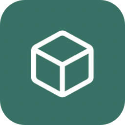

<!doctype html><html lang="ru"><head><meta charset="utf-8"><meta name="viewport" content="width=device-width,initial-scale=1"><title>Мастерская · Fusion</title><meta name="description" content="Практический курс Fusion: от первого эскиза до складного механизма для FDM-печати."><link rel="icon" href="data:image/svg+xml,%3Csvg xmlns='http://www.w3.org/2000/svg' viewBox='0 0 32 32'%3E%3Crect width='32' height='32' rx='6' fill='%2318222f'/%3E%3Cpath d='M8 24V8h17v4H12v4h10v4H12v4' fill='%23dcff75'/%3E%3C/svg%3E"><link rel="stylesheet" href="style.css"></head><body><aside><a class="brand" href="#lesson-1"><span>Мастерская<small>Курс Fusion</small></span></a><div class="course-label">Уроки</div><nav id="nav" aria-label="Программа курса"></nav></aside><main><div id="content"></div><footer>Fusion — продукт Autodesk. Независимый учебный курс. Справка по интерфейсу проверена 17.09.2026. Курс доступен без интернета.</footer></main><script src="course.js"></script><script src="app.js"></script></body></html>
